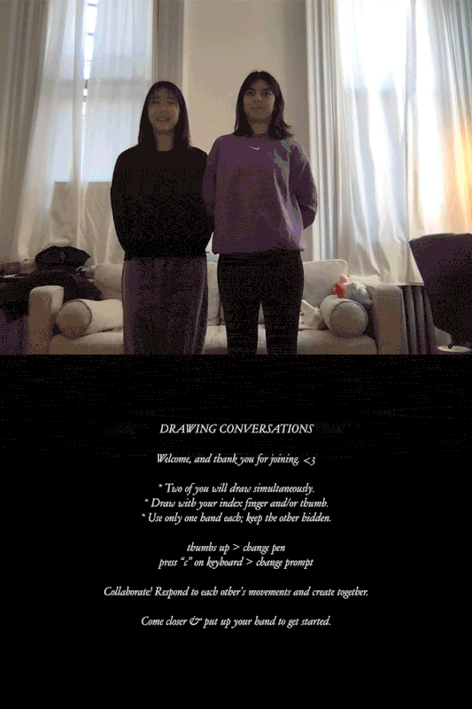
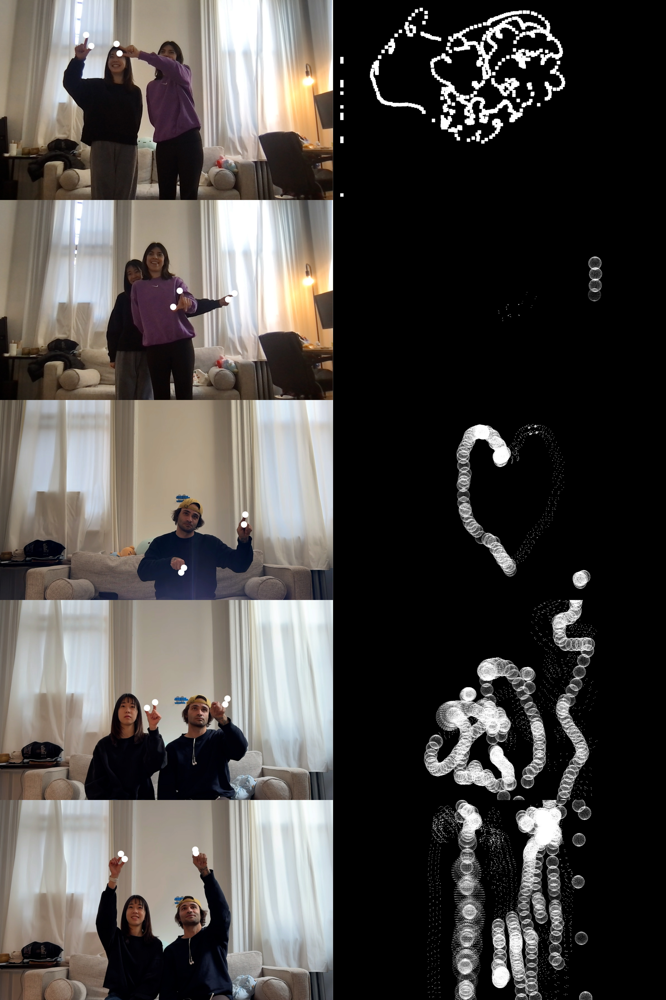
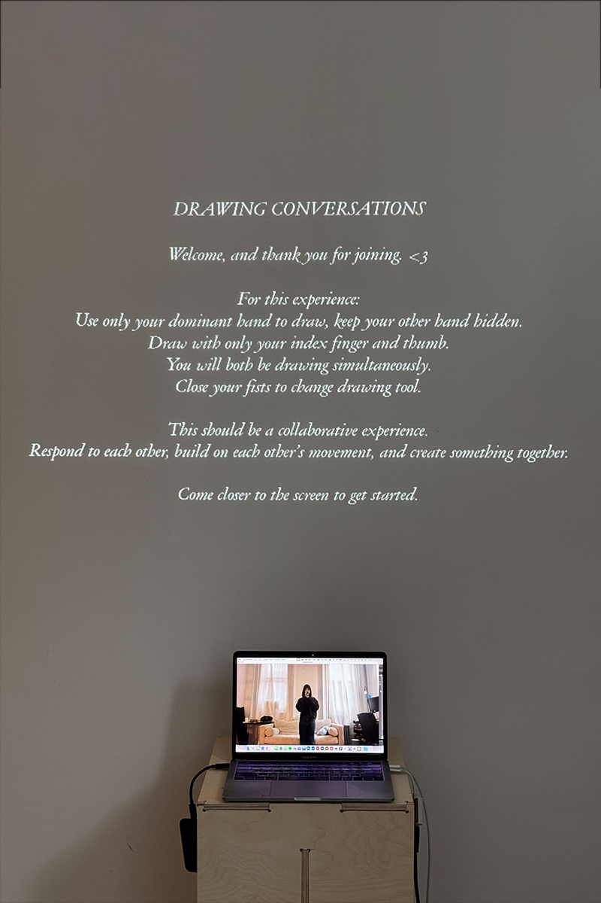
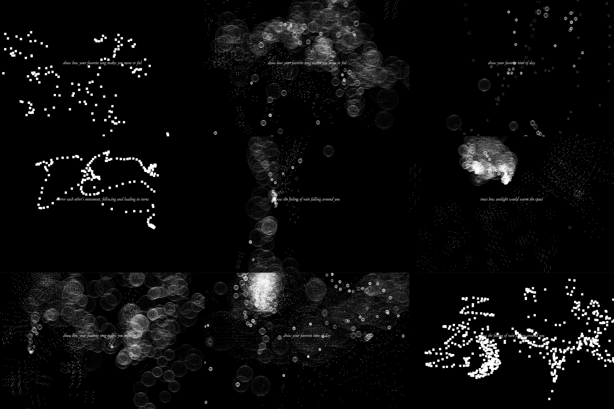
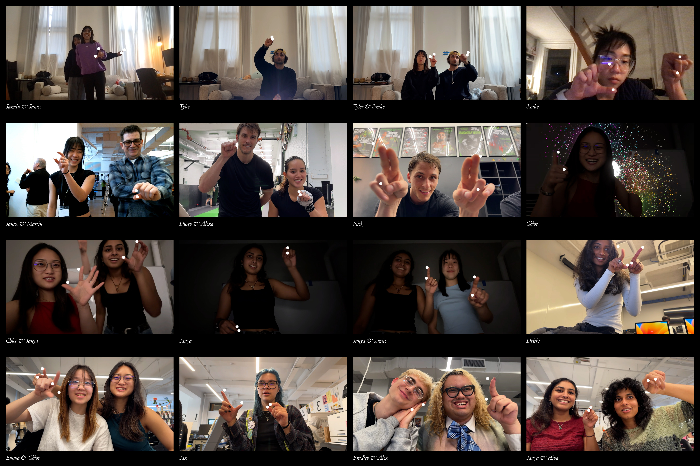
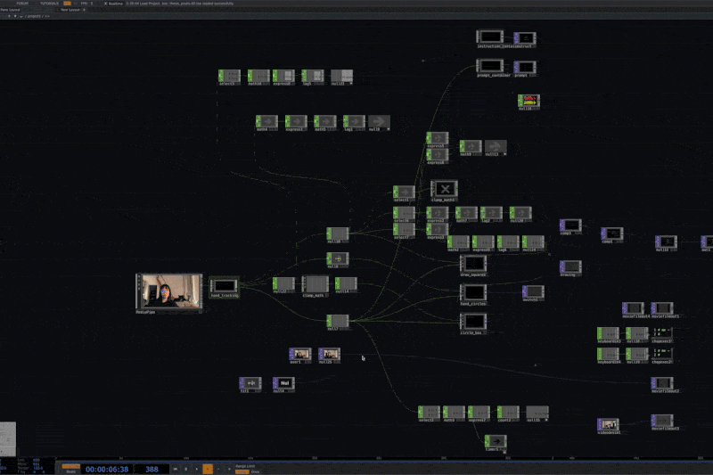

Drawing Conversations
for CD Thesis (May 2025)

In an era where digital interfaces mediate many of our interactions, physical movement and engagement with the tangible world have decreased, leading to greater social isolation and fewer shared experiences. My thesis explores how interactive, tactile experiences can counteract this shift by creating a renewed sense of presence, connection, and shared meaning between individuals.
Through participatory prompts, sensory exploration, and creative movement, I explore how physical gestures shape perception, memory, and emotional connections. This project responds to our cultural gravitation toward screen-based interactions and digital solitude, as highlighted in Derek Thompson’s The Anti-Social Century. Rather than rejecting technology, my thesis seeks to design an experience that encourages intuitive, in-person, hands-on engagement.
By creating an interactive space and collaborative activities, I aim to provide opportunities for people—myself included—to express themselves, connect with others, and rediscover the meaningful role of movement in communication and expression. This project emerges from my personal experiences with moving beyond digital spaces to connect with people around me, exploring how interactive design can bridge individual expression with collaborative participation, ultimately reinforcing the social and emotional aspects of human connection.
MediaPipe Plugin for TouchDesigner: Torin Blankensmith




